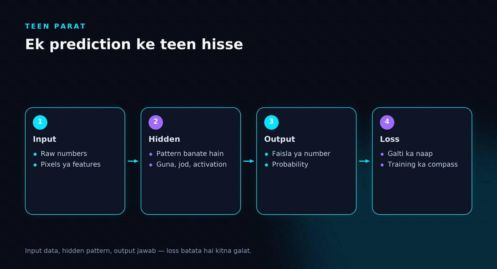
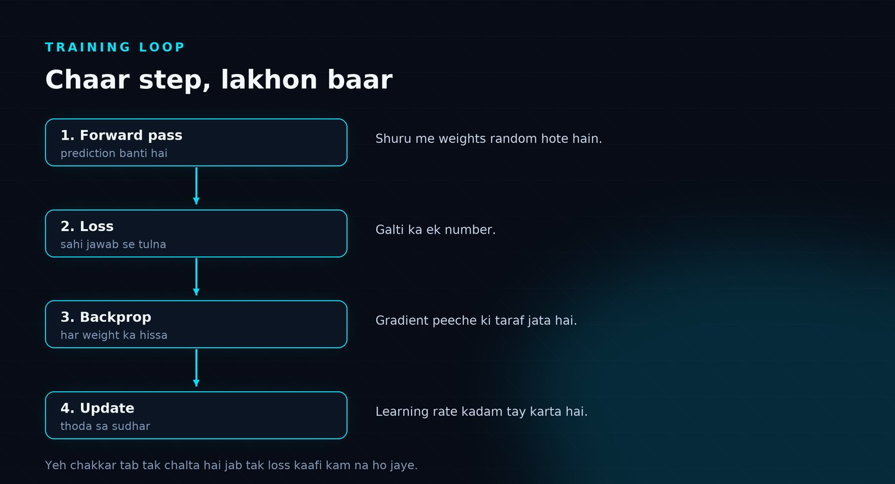

Neural Network Kya Hai? Layer, Weight aur Training Guide
“Neural network” naam sun kar lagta hai andar koi dimaag baitha hai jo soch raha hai। Asliyat isse zyada boring aur isse zyada sundar dono hai — andar sirf numbers ka ek lamba silsila hai, jisme har number ko thoda-thoda adjust kiya jata hai jab tak output theek na aane lage. Jo cheez ise khaas banati hai, woh hai galti se seekhne ka tarika: har prediction ke baad model ko bataya jata hai ki woh kitna galat tha, aur woh apne andar ke numbers ko us galti ke hisaab se badalta hai.
Is guide me main neural network ko bilkul shuru se kholunga — ek neuron ke andar kya hota hai, layer ka matlab, weight aur bias ka role, training loop ke chaar step, overfitting kyun hoti hai aur uske practical ilaaj, aur sabse zaroori baat: kab aapko neural network ki zaroorat hi nahi hai. Ye samajhna isliye zaroori hai ki aaj har “AI” product ke peeche lagbhag yahi cheez hoti hai, chahe woh chat model ho ya photo me chehra pehchanne wala filter.
Chhota jawab: Neural network numbers ka ek layered structure hai jo input leta hai, har layer me un numbers ko weight ke saath jodta hai, ek non-linear function se guzarta hai, aur aakhir me output deta hai. Training ka matlab hai hazaaron examples par output ko sahi answer se compare karna, galti (loss) naapna, aur backpropagation se har weight ko thoda adjust karna — yahi cycle lakhon baar chalta hai.
Neural network kya hai — ek line se shuru
Ek neural network ek function hai. Aap usme kuch input daalte hain — jaise ghar ka area, kamre, location — aur woh ek output deta hai, jaise ghar ka price. Function ke andar jo numbers fix nahi hote, unhe parameters ya weights kehte hain. Training ka poora maksad sirf itna hai ki un numbers ka aisa set mile jisme galti sabse kam ho.
Ise aise samjhein: aapke paas ek recipe hai jisme masalon ki matra likhi hai, par woh matra galat hai. Aap dish banate hain, chakhte hain, “namak kam hai” kehte hain, aur agli baar namak thoda badha dete hain. Neural network bilkul yahi karta hai — bas hazaaron masale ek saath, aur chakhne ka kaam ek loss function karta hai.
Ek baat shuru me hi saaf kar lein: neural network “samajhta” nahi hai. Woh pattern pakadta hai. Agar aapke training data me kutta hamesha ghaas par hi dikha hai, to model ghaas ko kutta samajh sakta hai. Isi wajah se data ki quality aur variety itni important hai — aur isi se aage hallucination aur bias wale mudde nikalte hain.
Ek neuron ke andar kya hota hai
Sabse chhoti iकाई neuron hai. Uske andar teen cheezein hoti hain: input, weight, aur ek activation function. Formula ek line ka hai — har input ko uske weight se guna karo, sab jodo, bias jodo, aur result ko activation function se guzaro.
z = (x1 * w1) + (x2 * w2) + ... + b
a = activation(z)Weight batata hai ki kis input ko kitni ahmiyat deni hai. Ghar ke price me area ka weight zyada ho sakta hai aur paint colour ka kam. Bias ek chhota offset hai jo model ko shift karne deta hai — jaise “is area me price thoda upar hi rehta hai”. Activation function woh mod hai jahan se seedhi line toot kar mud jaati hai; iske bina sau layers bhi ek hi seedhi line ke barabar hote hain.
Sabse aam activation hai ReLU — “agar negative hai to zero, warna jaisa hai waisa”. Simple lagta hai, par yahi chhoti si mudan model ko complex pattern seekhne deti hai. Output layer par kaam ke hisaab se alag function lagta hai: classification me softmax (probability), regression me seedha number.

Layers: input, hidden aur output
Input layer koi calculation nahi karti — woh sirf data ko andar le jaati hai. Ek image ke liye har pixel ek number hota hai, ek sentence ke liye har token. Hidden layers asli kaam karti hain: pehli layer chhote pattern pakadti hai (kinare, brightness), aage ki layers unhe jodkar bade pattern banati hain (aankh, kaan, poora chehra). Output layer aakhir me faisla deti hai — “billi 92%, kutta 8%”.
“Deep” learning ka matlab bas yahi hai ki hidden layers kai hain. 2012 ke baad jo kranti aayi, woh naye math se nahi — teen cheezon se aayi: GPU par sasta compute, bada data (ImageNet jaisa), aur aise tricks jo gehri layers ko train hone dete hain. Yahi wajah hai ki purane neural network aur aaj ke model ka basic math ek hi hai.
Layer count badhane se model zyada complex pattern seekh sakta hai, par saath me overfit hone ka khatra bhi badhta hai aur training slow hoti hai. Isliye “jitni gehri, utni acchi” galat soch hai. Chhoti tabular problem par 2–3 layer ka network bade transformer se behtar aur sasta nikal sakta hai.
Training kaise hoti hai — loss se gradient tak
Training ka poora cycle chaar step ka hai, aur yahi neural network ka dil hai. Ise samajh liya to baaki sab aasan ho jata hai.

- Forward pass. Input ko network se guzara jata hai aur prediction nikalti hai. Shuru me weights random hote hain, isliye prediction bakwas hoti hai — aur yahi theek hai.
- Loss. Prediction ko sahi answer se compare karke ek number nikala jata hai. Classification me cross-entropy, regression me mean squared error aam hai.
- Backpropagation. Loss ko peeche ki taraf bhej kar har weight ka hissa nikala jata hai — “is galti me tumhari kitni bhool thi”. Iske liye chain rule lagta hai, aur framework yeh kaam khud karta hai.
- Update. Ek optimizer (SGD ya Adam) har weight ko gradient ke ulti direction me thoda sa badalta hai. Learning rate batata hai ki kitna bada kadam lena hai.
Yeh poora cycle ek batch par chalta hai, phir agle batch par. Poore dataset par ek chakkar ko epoch kehte hain; aam taur par 10 se 100 epoch chalte hain. Beech me validation data par loss dekha jata hai — agar training loss gir raha hai par validation loss badh raha hai, to model rat raha hai, seekh nahi raha.
Learning rate: sabse chhota sabse bada button
Learning rate bahut bada ho to loss uchhal kood kar kabhi sthir nahi hota; bahut chhota ho to training ghanton me bhi aage nahi badhti. Practical shuruaat: Adam ke saath 0.001, phir loss curve dekh kar ghatao. Agar loss shuru me hi NaN ho jaye, to learning rate ya data scaling me gadbad hai.
Ek chhota example — churn prediction
Maan lijiye ek chhoti SaaS company jaanna chahti hai kaun sa customer agle mahine cancel karega. Input: mahine ka usage, support tickets, plan ka type, account ki age. Output: cancel hone ki probability. Yeh tabular problem hai, aur yahan ek 3-layer network kaafi hai — 2,000 se 20,000 rows me.
Data ko train, validation aur test me baanto — 70/15/15. Numeric columns ko scale karo, categories ko one-hot ya embedding me badlo. Phir model train karo aur precision dekho, accuracy nahi: agar 5% customers hi churn karte hain, to “sab bache rahenge” kehne wala model 95% accurate hoga aur bilkul bekaar. Aisi galtiyon se bachne ka poora tarika model evaluation wale post me khula hai.
Ek aur baat — business me aksar sawaal “kaun churn karega” se zyada “kis customer par call karein” hota hai. Model ka score laakhon me se top 200 customers chunne ke liye istemal hota hai. Isliye model ko usi tarah naapo jis tarah woh istemal hoga — top 200 me kitne asli churners aaye, na ki poore dataset ki accuracy.
Overfitting aur uske chaar ilaaj
Overfitting ka matlab hai model ne pattern nahi, examples yaad kar liye. Training data par 99% aur naye data par 70% — yeh classic signature hai. Iske chaar practical ilaaj hain, aur chaaron saath me istemal hote hain.
1. Zyada data. Sabse asar-dar ilaaj. Data augmentation (image ghumana, crop karna, text ka paraphrase) sasta shortcut hai jahan asli data nahi milta.
2. Regularization. L2 penalty weights ko chhota rakhti hai; dropout training ke dauraan kuch neurons ko randomly band kar deta hai, jisse model kisi ek raaste par depend nahi karta.
3. Early stopping। Validation loss jab badhne lage, training wahin rok do. Sabse sasta aur sabse underrated trick.
4. Simple model. Layers ya neurons ghatao. Agar chhota model barabar kaam kar raha hai, to bada model sirf risk hai.
Inke alawa ek cheez log bhool jate hain — data leakage. Agar test set ka koi hissa training me chala gaya, ya future ka data past ke saath mix ho gaya, to score achha dikhega aur production me sab gir jayega. Split banane se pehle socho ki “production me model ko kya dikhega”, aur usi ke hisaab se split karo.
Kitna data aur kitna compute chahiye
Iska koi fixed jawab nahi, par ek seedha hisaab madad karta hai: parameters ke mukable examples. Chhoti tabular problem me hazaaron rows kaafi hoti hain; image classification me har class ke hazaar-se-lakh images; language model me arabon tokens. Jab data kam ho, to pretrained model ka fine-tuning ya classical ML (gradient boosting) aksar behtar nikalta hai.
Compute ki baat karein to laptop par bhi chhote network train ho jate hain. Image ya text ke bade model ke liye GPU chahiye — aur wahan asli kharch training nahi, experiments hote hain: sau baar train karke pata karna ki kaun sa setup theek hai. Isliye pehle chhote subset par pipeline theek karo, phir poore data par jao.
Ek practical niyam: har experiment ka ek hi badlav rakho. Agar aap architecture, learning rate aur data ek saath badloge, to pata nahi chalega ki farq kis cheez se aaya. Chhoti team ke liye yeh anushasan sabse zyada samay bachata hai.
Neural network kab nahi chahiye
Yeh section shayad sabse zyada paisa bachata hai. Agar aapke paas 2,000 rows aur 15 columns hain, to XGBoost ya logistic regression aksar neural network se barabar ya behtar deta hai — aur samjhane me aasan hota hai. Bank, insurance aur credit scoring me aaj bhi aise model chalte hain, kyunki regulator ko batana padta hai ki faisla kaise hua.
Neural network tab chuno jab data bada, unstructured (image, audio, text) ho, ya pattern itna complex ho ki haath se features banana mushkil ho. Warna pehle simple baseline banao. Baseline ka ek aur fayda hai — woh batata hai ki problem me asli signal kitna hai. Kabhi-kabhi baseline hi 92% de deta hai aur poori deep learning ki zaroorat khatam ho jati hai.
Mera anubhav
Pehla neural network maine ek customer support ticket classifier ke liye banaya tha — 8 categories, 6,000 tickets. Maine seedha 4-layer network liya, kyunki tutorial me wahi dikha tha. Do hafte lagakar 71% accuracy aayi. Phir ek senior ne kaha, “TF-IDF aur logistic regression try karo.” Woh 30 minute me 78% de gaya.
Isse jo seekha, woh aaj bhi kaam aata hai: pehle sabse simple cheez se shuru karo, aur metric pehle tay karo. Us project me asli dikkat model nahi thi — 8 categories me se 3 aisi thi jo aapas me milti-julti thi, aur unhe alag karna data ka problem tha, math ka nahi. Jab humne un 3 ko merge karke 5 categories kiya, dono model behtar ho gaye.
Doosri sikh — training loop ko chhote data par pehle chalao. Ek baar mera loss NaN aa raha tha aur maine do din architecture badalte guzaar diye; asli wajah thi ek column me missing values jo scale hone ke baad infinite ban gayi thi. Ab main pehle 100 rows par overfit karke dekhta hoon — agar model 100 rows ko bhi yaad nahi kar pa raha, to bug code me hai, data me nahi.
Nateeja
Neural network ek layered function hai jo weights se pattern seekhta hai. Neuron ke andar guna, jod, aur activation hai; layers milakar complex pattern banate hain; training forward pass, loss, backpropagation aur update ka loop hai. Overfitting ko data, regularization aur early stopping se roko, aur simple baseline se shuru karo.
Agar aap aaj hi shuru karna chahte hain, to ek chhoti si practice karein: kisi public dataset par ek 2-layer network likhein, pehle 100 rows par overfit karke dekhein ki code sahi hai, phir poore data par chala kar training aur validation loss dono plot karein. Yeh ek exercise aapko theory se zyada sikhayegi.
Aage padhein: machine learning vs deep learning — dono ka farq aur kab kaunsa chuno; LLM tokens aur context window — jahan aaj ke bade model isi basic cheez par kaise khade hain; aur data cleaning — kyunki 80% samay data par hi jata hai.
अक्सर पूछे जाने वाले सवाल
Neural network seekhne ke liye kitni math chahiye?
Basic linear algebra aur derivative ka intuition kaafi hai shuruat ke liye। Deep math baad me, zaroorat padne par seekhein.
Kya neural network bina GPU train ho sakta hai?
Chhote tabular aur text model haan, laptop par minutes me. Image aur bade language model ke liye GPU practically zaroori hai.
Weights aur parameters ek hi cheez hain?
Lagbhag. Parameters me weights aur biases dono aate hain; rozmarra ki baat me log dono ko weight hi kehte hain.
Model kitne epoch chalana chahiye?
Fixed number nahi. Validation loss jab badhne lage wahin rok dein — ise early stopping kehte hain.
Kya zyada layers hamesha behtar hain?
Nahi. Zyada layers overfit aur slow ho sakti hain. Chhote model se shuru karke zaroorat par badhayein.